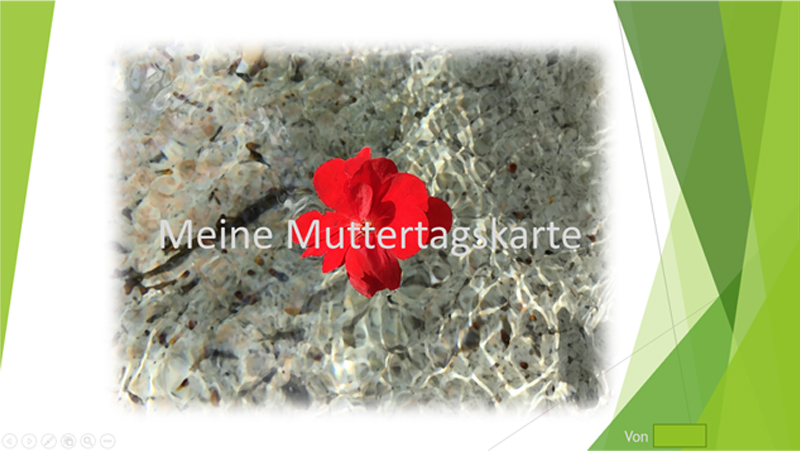

Muttertag
Na, hast du auch schon dran gedacht?
Heute ist Muttertag! Jährlich findet am zweiten Sonntag im Mai der Tag zu Ehren unserer Mütter und der Mutterschaft statt.
Das bedeutet, dass am heutigen Tag unsere Mütter gefeiert werden und zum Beispiel kleine (selbst gebastelte) Geschenke, Gutscheine, Pralinen, Gedichte oder sogar Blumen von uns bekommen.
Aus diesem Grund wünscht KABU allen Müttern:
Alles Gute zum Muttertag!
💭 Sprechblase Alles Gute zum Muttertag!
Hast du deiner Mutter auch etwas Kleines zum Muttertag geschenkt und/oder gebastelt? Wir dürfen zum heutigen Anlass zwei selbst gebastelte Karten zum Muttertag veröffentlichen. Sind diese nicht toll geworden?

Die Karten zu basteln geht übrigens ganz einfach! Wir haben hierzu draußen nach schönen Motiven gesucht und diese abgeknipst. Zur kreativen Gestaltung haben wir eine Präsentationssoftware genutzt und die tollen Ergebnisse anschließend ausgedruckt!
Probier es doch gleich mal aus und überrasche deine Mutter!
💭 Denkblase Probier es doch gleich mal aus und überrasche deine Mutter!
Wenn du eine selbst gebastelte Karte hast, die du gerne in der KABU-App veröffentlichen willst, schreib gerne der KABU-Redaktion. Das geht ganz einfach, indem du unten auf den blauen Button Schreib dem KABU-Team klickst